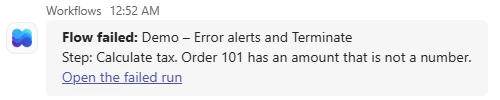
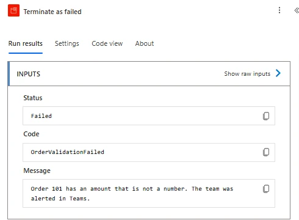
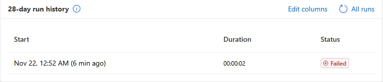

- Power Automate
- Level 4 · Reliable flows · 7 of 7
Error alerts and Terminate
Try / catch stops failures going unnoticed inside the flow. Two more pieces finish the job: an alert that reaches a person with a link to the failed run, and Terminate, which sets the run's final status.
The demo flow
WhatInside Catch: post an alert with the run link, then Terminate as Failed.
WhyPeople act on alerts that say what failed and link straight to it; monitoring needs honest statuses.
DemoOrder 101 has an amount that isn't a number.
Catch, finished properly
Try fails at Calculate tax
Catch: Alert in Teams with flow name, step, message and run link
Terminate: Failed, code
OrderValidationFailedRun history shows Failed

The alert and its run link

https://make.powerautomate.com/environments/@{workflow()?['tags']?['environmentName']}/flows/@{workflow()?['name']}/runs/@{workflow()?['run']?['name']}| Expression | Gives |
|---|---|
workflow()?['tags']?['environmentName'] | The environment ID |
workflow()?['name'] | The flow's ID |
workflow()?['run']?['name'] | This run's ID |
workflow()?['tags']?['flowDisplayName'] | The flow's name, for the message |
Built from workflow(), the link works in any environment without changes.
Terminate

| Status | Use when |
|---|---|
| Failed (code + message) | Something went wrong that the flow couldn't fix |
| Cancelled | The run should stop, but it isn't an error |
| Succeeded | End early: nothing more to do |

Business errors and system errors
Sort every failure into one of two kinds
Did the data break a rule, or did something technical fail?
Data (BE)
Don't retry
Tell the business owner:
BE001 Amount missingTechnical (SE)
Retry may work
Tell support:
SE001 Connector unavailableKeep codes and messages in a SharePoint list or a JSON environment variable, so wording changes don't touch the flow.
New to this? Start from the basics optional
workflow(): details about the current flow and run.
Alert fatigue: people ignore alerts that fire too often.
Common mistakes
- Alerts with no link and no error message.
- Hard-coded environment IDs in the link.
- Terminate placed where it never runs (check its run after).
- Alerting support about business errors.